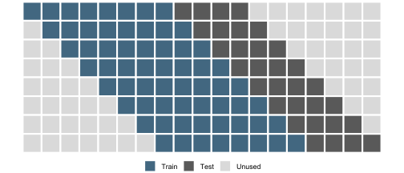
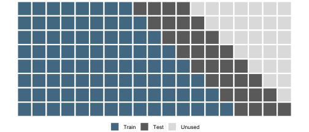

The package tscv provides helper functions for time series analysis, forecasting, and time series cross-validation. It is designed to work with the tidy forecasting ecosystem, especially tsibble, fable, fabletools, and feasts.
The package contains tools for:
- creating rolling-origin resampling schemes for time series cross-validation
- slicing training and test samples from time-indexed data
- converting forecasts into a common format for evaluation
- calculating forecast accuracy measures
- visualizing time series data, forecast errors, and distributional properties
- fitting additional benchmark and forecasting models compatible with
fable - working with example time series data sets
The main focus of the package is to simplify repeated forecasting experiments across several time series, models, forecast horizons, and rolling-origin splits.
Installation
You can install the development version from GitHub with:
# install.packages("devtools")
devtools::install_github("ahaeusser/tscv")Workflow
A typical workflow with tscv consists of the following steps:
- Prepare the data in long format.
- Define a
contextobject identifying the series, value, and index columns. - Create rolling-origin splits using
make_split(). - Slice the training and test data using
slice_train()andslice_test(). - Estimate forecasting models using
fableor the additional models provided bytscv. - Convert forecasts with
make_future(). - Evaluate forecast accuracy with
make_accuracy(). - Visualize the data, forecasts, or accuracy measures.
Example
The central idea of time series cross-validation is to evaluate forecasts repeatedly over time. Instead of relying on a single train-test split, tscv creates several rolling-origin splits. Each split contains a training window for model estimation and a test window for forecast evaluation.
Two common rolling-origin schemes are fixed window and expanding window cross-validation.
Fixed window cross-validation
In a fixed window setup, both the training window and the test window move forward through time. The length of the training sample stays constant. This is useful when recent observations are expected to be more informative than older observations, for example when the data-generating process changes over time.
In the plot below, each row represents one split and each square represents one time point. Blue squares are used for training, dark squares are used for testing, and light squares are not used in that split.

Fixed window cross-validation: the training and test windows both move forward through time.
For example, the following code creates fixed window splits for one monthly time series from the M4 forecasting competition. The first training window contains 120 monthly observations and each test window contains the next 18 observations. Since the origin itself advances by one step, n_skip = 17 moves the next split forward by 18 observations in total.
context <- list(
series_id = "series",
value_id = "value",
index_id = "index"
)
main_frame <- M4_monthly_data |>
filter(series == "M23100")
fixed_split <- make_split(
main_frame = main_frame,
context = context,
type = "first",
value = 120,
n_ahead = 18,
n_skip = 17,
n_lag = 0,
mode = "slide",
exceed = FALSE
)
fixed_split
#> # A tibble: 2 × 4
#> series split train test
#> <chr> <int> <list> <list>
#> 1 M23100 1 <int [120]> <int [18]>
#> 2 M23100 2 <int [120]> <int [18]>The resulting object contains one row per split. The train and test columns are list-columns with the row positions used for model estimation and forecast evaluation.
Expanding window cross-validation
In an expanding window setup, the start of the training sample stays fixed while the end moves forward through time. The training sample therefore grows with each split. This is useful when all historical observations are considered informative and the goal is to mimic a forecasting process where more data becomes available over time.

Expanding window cross-validation: the training window grows while the test window moves forward.
The same setup can be switched to expanding window cross-validation by using mode = "stretch".
expanding_split <- make_split(
main_frame = main_frame,
context = context,
type = "first",
value = 120,
n_ahead = 18,
n_skip = 17,
n_lag = 0,
mode = "stretch",
exceed = FALSE
)
expanding_split
#> # A tibble: 2 × 4
#> series split train test
#> <chr> <int> <list> <list>
#> 1 M23100 1 <int [120]> <int [18]>
#> 2 M23100 2 <int [138]> <int [18]>Both approaches use the same forecast horizon and rolling-origin step size. The difference is how the training sample is updated. After the splits have been created, they can be passed to the remaining tscv workflow: slice the training and test samples, estimate forecasting models, convert forecasts, and evaluate forecast accuracy.
Forecasting and accuracy evaluation
After creating the split plan, the training and test samples can be extracted and used with the tidy forecasting ecosystem. The example below fits a seasonal naive model to each split, converts the forecasts to a standardized format, and calculates forecast accuracy by horizon.
train_frame <- slice_train(
main_frame = main_frame,
split_frame = expanding_split,
context = context
) |>
as_tsibble(
index = index,
key = c(series, split)
)
model_frame <- train_frame |>
model(
"SNAIVE" = SNAIVE(value ~ lag("year"))
)
fable_frame <- model_frame |>
forecast(h = 18)
future_frame <- make_future(
fable = fable_frame,
context = context
)
accuracy_frame <- make_accuracy(
future_frame = future_frame,
main_frame = main_frame,
context = context,
dimension = "horizon"
)
accuracy_frame
#> # A tibble: 126 × 6
#> series model dimension n metric value
#> <chr> <chr> <chr> <int> <chr> <dbl>
#> 1 M23100 SNAIVE horizon 1 MAE 130
#> 2 M23100 SNAIVE horizon 2 MAE 160
#> 3 M23100 SNAIVE horizon 3 MAE 115
#> 4 M23100 SNAIVE horizon 4 MAE 145
#> 5 M23100 SNAIVE horizon 5 MAE 125
#> 6 M23100 SNAIVE horizon 6 MAE 125
#> 7 M23100 SNAIVE horizon 7 MAE 150
#> 8 M23100 SNAIVE horizon 8 MAE 110
#> 9 M23100 SNAIVE horizon 9 MAE 100
#> 10 M23100 SNAIVE horizon 10 MAE 125
#> # ℹ 116 more rowsFunction overview
The following table summarizes the main functions in tscv by topic.
| Topic | Function(s) | Description |
|---|---|---|
| Time Series Cross-Validation |
make_split(), split_index(), slice_train(), slice_test(), make_future(), make_tsibble()
|
Create rolling-origin splits, extract train/test samples, convert forecasts, and prepare tsibble objects |
| Forecast Accuracy |
make_accuracy(), make_errors(), me_vec(), mae_vec(), mse_vec(), rmse_vec(), mpe_vec(), mape_vec(), smape_vec()
|
Calculate forecast errors and point forecast accuracy measures |
| Data Analysis |
estimate_mode(), estimate_kurtosis(), estimate_skewness(), acf_vec(), pacf_vec(), estimate_acf(), estimate_pacf(), interpolate_missing(), smooth_outlier(), check_data(), summarise_data(), summarise_stats(), summarise_split()
|
Check, prepare, summarize, and analyze time series data |
| Data Visualization |
plot_bar(), plot_density(), plot_histogram(), plot_line(), plot_point(), plot_qq(), theme_tscv(), scale_color_tscv(), scale_fill_tscv(), tscv_cols(), tscv_pal()
|
Visualize time series data, distributions, diagnostics, and apply the tscv theme and color palette |
| Forecasting |
TBATS(), DSHW(), SMEAN(), SMEDIAN(), MEDIAN(), SNAIVE2()
|
Forecasting functions and benchmark models compatible with the fable, tsibble, and fabletools ecosystem |
Data sets
The package includes example data sets that can be used for testing, examples, and vignettes.
| Data set | Description |
|---|---|
elec_price |
Hourly day-ahead electricity spot prices for selected European bidding zones |
elec_load |
Hourly electricity load for selected European bidding zones |
M4_monthly_data |
Selected monthly time series from the M4 forecasting competition |
M4_quarterly_data |
Selected quarterly time series from the M4 forecasting competition |